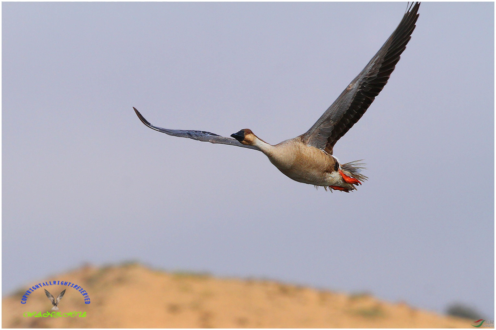

一些经常或不经常用到的镜像启动方法



带ssh的centos
docker run -d -p 0.0.0.0:2222:22 tutum/centos6docker run -d -p 0.0.0.0:2222:22 tutum/centosdocker run -d -p 0.0.0.0:2222:22 -v /etc/localtime:/etc/localtime:ro -v /etc/timezone:/etc/timezone:ro tutum/centos6docker run -d -p 0.0.0.0:2222:22 -v /etc/localtime:/etc/localtime:ro -v /etc/timezone:/etc/timezone:ro tutum/centos支持两种验证方式:docker run -d -p 0.0.0.0:2222:22 -v /etc/localtime:/etc/localtime:ro -v /etc/timezone:/etc/timezone:ro -e ROOT_PASS="mypass" tutum/centosdocker run -d -p 2222:22 -e AUTHORIZED_KEYS="`cat ~/.ssh/id_rsa.pub`" tutum/centosdocker logs <CONTAINER_ID>ssh -p <port> root@<host>参考: https://hub.docker.com/r/tutum/centos/
带ping/curl/nslookup的busybox
xxxxxxxxxxdocker run -itd --name=test1 --net=test-network radial/busyboxplus /bin/shnginx
xxxxxxxxxxdocker run --name nginx-lb -d -v /etc/nginx/nginx.conf:/etc/nginx/nginx.conf:ro --net=host --restart=always -v /etc/localtime:/etc/localtime nginx:1.13.3-alpinelnmp(每个组件独立)
参考: https://github.com/micooz/docker-lnmp
xxxxxxxxxxdocker-compose up
启动一个mysql
xxxxxxxxxxcat /root/dockerfile/mysql/start.shdocker run -p 3306:3306 -v /data/mysql:/var/lib/mysql -v /etc/localtime:/etc/localtime --name mysql5 --restart=always -d mysql:5.6.23 --character-set-server=utf8 --collation-server=utf8_general_cixxxxxxxxxxdocker run -p 3306:3306 -v /data/mysql:/var/lib/mysql -v /etc/localtime:/etc/localtime -v /data/mysql/my.cnf:/etc/my.cnf --name mysql5 --restart=always -d mysql:5.6.23
xxxxxxxxxxshow VARIABLES like '%max_allowed_packet%';show variables like '%storage_engine%';show variables like 'collation_%';show variables like 'character_set_%';
mysql主从库
xxxxxxxxxx#+++++++++++++++++++++++++++# mysql主从库#+++++++++++++++++++++++++++docker run -d -e REPLICATION_MASTER=true -e REPLICATION_PASS=mypass -p 3306:3306 --name mysql tutum/mysqldocker run -d -e REPLICATION_SLAVE=true -p 3307:3306 --link mysql:mysql tutum/mysql
gogs安装(不过建议用gitlab)
xxxxxxxxxxdocker run -itd \-p 53000:3000 -p 50022:22 \-v /data/gogs:/data \-v /etc/localtime:/etc/localtime \--restart=always \gogs/gogs
cowcloud
xxxxxxxxxxdocker run -v /data/owncloud-data:/var/www/html -v /etc/localtime:/etc/localtime -v :/var/www/html/config --restart=always -itd -p 8000:80 owncloud
nextcloud(和owncloud一样,据说这个支持在线md记录笔记,总之感觉功能更强大)
参考: https://hub.docker.com/_/nextcloud/
xxxxxxxxxxdocker run -d \-p 8080:80-v nextcloud:/var/www/html \nextcloud
安装confluence
xxxxxxxxxxdocker run \-v /data/confluence/conflu_data:/var/atlassian/application-data/confluence \-v /etc/localtime:/etc/localtime \-v /data/confluence/server.xml:/opt/atlassian/confluence/conf/server.xml \--restart=always \--link mysql5:db \--name="confluence" -d \-p 8090:8090 \-p 8091:8091 \cptactionhank/atlassian-confluence
参考:http://wuyijun.cn/shi-yong-dockerfang-shi-an-zhuang-he-yun-xing-confluence/
配置confluence
- 创建数据库
xxxxxxxxxxcreate database confluence default character set utf8 collate utf8_bin;grant all on confluence.* to 'confluence'@"172.17.0.%" identified by "confluenceman";grant all on confluence.* to 'confluence'@"192.168.6.%";grant all on confluence.* to 'confluence'@"192.168.8.%";
- 安装破解
xxxxxxxxxx1.导出后用破机器破解docker cp confluence:/opt/atlassian/confluence/confluence/WEB-INF/lib/atlassian-extras-decoder-v2-3.2.jar ./mv atlassian-extras-decoder-v2-3.2.jar atlassian-extras-2.4.jar2. 将破解文件导入系统mv atlassian-extras-2.4.jar atlassian-extras-decoder-v2-3.2.jardocker cp ./atlassian-extras-decoder-v2-3.2.jar confluence:/opt/atlassian/confluence/confluence/WEB-INF/lib/3.重启confluencedocker stop confluencedocker start confluence
- 1.贴上破机器的序列号
- 2.选jdbc连mysql url写:
xxxxxxxxxxjdbc:mysql://db:3306/confluence?sessionVariables=storage_engine%3DInnoDB&amp;useUnicode=true&amp;characterEncoding=utf8
- 3.导入既有的数据
参考:https://www.ilanni.com/?p=11989
如:
xmlexport-20170902-100808-153.zip这里包含了数据库数据. - 4.安装完毕
xxxxxxxxxx管理员帐号密码登陆 http://192.168.x.x:8090adminxxxxx
- 5.配置邮箱 这里我没用server.xml里配置(配了测试有问题),直接smtp用新浪邮箱配的
xxxxxxxxxxsmtp.sina.commt@sina.com123456
phabricator审计系统(客服给开发提bug)
xxxxxxxxxxdocker run -d \-p 9080:80 -p 9443:443 -p 9022:22 \--env PHABRICATOR_HOST=sj.pp100.net \--env MYSQL_HOST=192.168.x.x \--env MYSQL_USER=root \--env MYSQL_PASS=elc123 \--env PHABRICATOR_REPOSITORY_PATH=/repos \--env PHABRICATOR_HOST_KEYS_PATH=/hostkeys/persisted \-v /data/phabricator/hostkeys:/hostkeys \-v /data/phabricator/repo:/repos \redpointgames/phabricator
hackmarkdown安装(内网markdown服务器,支持贴图权限,还有专门的客户端等)
https://github.com/hackmdio/docker-hackmd/blob/master/docker-compose.yml
xxxxxxxxxxdocker-compose up -d
参考: 数据的备份等都有. https://github.com/hackmdio/docker-hackmd https://hub.docker.com/r/hackmdio/hackmd/
容器启动常用选项
- 1, 时区
- 2, 自动重启
- 3, 日志
xxxxxxxxxxdocker run \-v /etc/localtime:/etc/localtime:ro-v /etc/timezone:/etc/timezone:ro--restart=always \docker run \-v /etc/localtime:/etc/localtime:ro-v /etc/timezone:/etc/timezone:ro-v /etc/localtime:/etc/localtime:ro -v /etc/timezone:/etc/timezone:ro记录两份 一份是前台输出,另一份docker run -it --rm -p 80:80 nginxll /var/lib/docker/containers/*/*.log
针对容器的日志切割(不然日志越滚越大)
容器日志目录: /var/lib/docker/containers//.log.*
xxxxxxxxxxdocker run -d -v /var/lib/docker/containers:/var/lib/docker/containers:rw \-v /etc/localtime:/etc/localtime:ro \--restart=always \tutum/logrotate
- 原理(logrotated的一个copytruncate选项很好,不截断日志情况下滚动日志)
xxxxxxxxxx## 可以进到容器里看看日志滚动策略.#https://hub.docker.com/r/tutum/logrotate// # cat /etc/logrotate.conf/var/lib/docker/containers/*/*.log {rotate 0copytruncatesharedscriptsmaxsize 10Mpostrotaterm -f /var/lib/docker/containers/*/*.log.*endscript#logrotate说明copytruncate# http://www.lightxue.com/how-logrotate-works#让我联想起了nginx日志切割cat > /etc/logrotate.d/nginx/usr/local/nginx/logs/*.log {dailymissingokrotate 7dateextcompressdelaycompressnotifemptysharedscriptspostrotateif [ -f /usr/local/nginx/logs/nginx.pid ]; thenkill -USR1 `cat /usr/local/nginx/logs/nginx.pid`fiendscript}
清理长时间不用的镜像和volumes
xxxxxxxxxxdocker run -d \--privileged \-v /var/run:/var/run:rw \-v /var/lib/docker:/var/lib/docker:rw \-e IMAGE_CLEAN_INTERVAL=1 \-e IMAGE_CLEAN_DELAYED=1800 \-e VOLUME_CLEAN_INTERVAL=1800 \-e IMAGE_LOCKED="ubuntu:trusty, tutum/curl:trusty" \tutum/cleanup# https://hub.docker.com/r/tutum/cleanup/# IMAGE_CLEAN_INTERVAL (optional) How long to wait between cleanup runs (in seconds), 1 by default.# IMAGE_CLEAN_DELAYED (optional) How long to wait to consider an image unused (in seconds), 1800 by default.# VOLUME_CLEAN_INTERVAL (optional) How long to wait to consider a volume unused (in seconds), 1800 by default.# IMAGE_LOCKED (optional) A list of images that will not be cleaned by this container, separated by ,
- 原理:调用二进制程序
xxxxxxxxxx/ # cat run.sh#!/bin/shif [ ! -e "/var/run/docker.sock" ]; thenecho "=> Cannot find docker socket(/var/run/docker.sock), please check the command!"exit 1fiif [ "${IMAGE_LOCKED}" == "**None**" ]; thenexec /cleanup \-imageCleanInterval ${IMAGE_CLEAN_INTERVAL} \-imageCleanDelayed ${IMAGE_CLEAN_DELAYED}elseexec /cleanup \-imageCleanInterval ${IMAGE_CLEAN_INTERVAL} \-imageCleanDelayed ${IMAGE_CLEAN_DELAYED} \-imageLocked "${IMAGE_LOCKED}"fi
zk集群
参考: https://segmentfault.com/a/1190000006907443
xxxxxxxxxxversion: '2'services:zoo1:image: zookeeperrestart: alwayscontainer_name: zoo1volumes:- /etc/localtime:/etc/localtimeports:- "2181:2181"environment:ZOO_MY_ID: 1ZOO_SERVERS: server.1=zoo1:2888:3888 server.2=zoo2:2888:3888 server.3=zoo3:2888:3888zoo2:image: zookeeperrestart: alwayscontainer_name: zoo2volumes:- /etc/localtime:/etc/localtimeports:- "2182:2181"environment:ZOO_MY_ID: 2ZOO_SERVERS: server.1=zoo1:2888:3888 server.2=zoo2:2888:3888 server.3=zoo3:2888:3888zoo3:image: zookeeperrestart: alwaysvolumes:- /etc/localtime:/etc/localtimecontainer_name: zoo3ports:- "2183:2181"environment:ZOO_MY_ID: 3ZOO_SERVERS: server.1=zoo1:2888:3888 server.2=zoo2:2888:3888 server.3=zoo3:2888:3888
检查:
xxxxxxxxxxecho stat|nc127.0.0.1 2181或者进入到容器去看#docker exec zoo1 /zookeeper-3.4.10/bin/zkCli.sh -server 127.0.0.1:2181#/zookeeper-3.4.10/bin/zkCli.sh -server 127.0.0.1:2181
zabbix(monitoringartist这小伙把组件搞在一个镜像了)
xxxxxxxxxxdocker run \-d \--name dockbix-db \-v /backups:/backups \-v /etc/localtime:/etc/localtime:ro \--volumes-from dockbix-db-storage \--env="MARIADB_USER=zabbix" \--env="MARIADB_PASS=my_password" \monitoringartist/zabbix-db-mariadb# Start Dockbix linked to the started DBdocker run \-d \--name dockbix \-p 80:80 \-p 10051:10051 \-v /etc/localtime:/etc/localtime:ro \--link dockbix-db:dockbix.db \--env="ZS_DBHost=dockbix.db" \--env="ZS_DBUser=zabbix" \--env="ZS_DBPassword=my_password" \--env="XXL_zapix=true" \--env="XXL_grapher=true" \monitoringartist/dockbix-xxl:latest
docker监控advisor
xxxxxxxxxxdocker run \--volume=/:/rootfs:ro \--volume=/var/run:/var/run:rw \--volume=/sys:/sys:ro \--volume=/var/lib/docker/:/var/lib/docker:ro \--publish=8080:8080 \--detach=true \--name=cadvisor \google/cadvisor:latesthttp://192.168.14.133:8080/
centos7跑cAdvisor-InfluxDB-Grafana
- 参考
xxxxxxxxxxhttp://www.pangxie.space/docker/456https://www.brianchristner.io/how-to-setup-docker-monitoring/https://github.com/vegasbrianc/docker-monitoring/blob/master/docker-monitoring-0.9.json
- 启动influxdb(使用最新的发现不好使)
xxxxxxxxxxdocker run -d -p 8083:8083 -p 8086:8086 --expose 8090 --expose 8099 --name influxsrv tutum/influxdb:0.10
- 创建db
docker exec -it influxsrv bash use cadvisor CREATE USER "root" WITH PASSWORD 'root' WITH ALL PRIVILEGES CREATE DATABASE cadvisor show users
- 启动cadvisor
docker run --volume=/:/rootfs:ro --volume=/var/run:/var/run:rw --volume=/sys:/sys:ro --volume=/var/lib/docker/:/var/lib/docker:ro --publish=8080:8080 --detach=true --link influxsrv:influxsrv --name=cadvisor google/cadvisor:latest -storage_driver=influxdb -storage_driver_db=cadvisor -storage_driver_host=influxsrv:8086
- 启动grafna, 加db源.导入dashboard
docker run -d -p 3000:3000 -e INFLUXDB_HOST=192.168.14.133 -e INFLUXDB_PORT=8086 -e INFLUXDB_NAME=cadvisor -e INFLUXDB_USER=root -e INFLUXDB_PASS=root --link influxsrv:influxsrv --name grafana grafana/grafana
Prometheus+Grafana(这个比cAdvisor-InfluxDB-Grafana展示效果更好一些)
A Prometheus & Grafana docker-compose stack
参考: https://github.com/vegasbrianc/prometheus
docker-compose up -d
elk
参考: https://github.com/gregbkr/elk-dashboard-v5-docker
docker-compose up -d
安装elk的head插件
docker run -d -v /etc/localtime:/etc/localtime --restart=always -p 9100:9100 mobz/elasticsearch-head:5
物理机安装elk之前的优化操作
sudo sysctl -w vm.max_map_count=262144
make it persistent:
$ vim /etc/sysctl.conf
vm.max_map_count=262144
## es常用操作参考: http://www.cnblogs.com/lishouguang/p/4560930.html
## 备份,扩容等脚本,有点老,但是思路可以参考,https://github.com/gregbkr/docker-elk-cadvisor-dashboards
http://192.168.14.133:9200/_cat/health?v #查看集群状态
http://192.168.14.133:9200/_cat/nodes?v #查看节点状态
http://192.168.14.133:9200/_cat/indices?v #查看index列表
#创建index
curl -XPUT http://vm1:9200/customer?pretty
#添加一个document
[es@vm1 ~]$ curl -XPUT vm1:9200/customer/external/1?pretty -d '{"name":"lisg"}'
#检索一个document
[es@vm1 ~]$ curl -XGET vm1:9200/customer/external/1?pretty
#删除一个document
[es@vm1 ~]$ curl -XDELETE vm1:9200/customer/external/1?pretty
#删除一个type
[es@vm1 ~]$ curl -XDELETE vm1:9200/customer/external?pretty
#删除一个index
[es@vm1 ~]$ curl -XDELETE vm1:9200/customer?pretty
#POST方式可以添加一个document，不用指定ID
[es@vm1 ~]$ curl -XPOST vm1:9200/customer/external?pretty -d '{"name":"zhangsan"}'
#使用doc更新document
[es@vm1 ~]$ curl -XPUT vm1:9200/customer/external/1?pretty -d '{"name":"lisg4", "age":28}'
#使用script更新document（1.4.3版本动态脚本是被禁止的）
[es@vm1 ~]$ curl -XPOST vm1:9200/customer/external/1/_update?pretty -d '{"script":"ctx._source.age += 5"}'